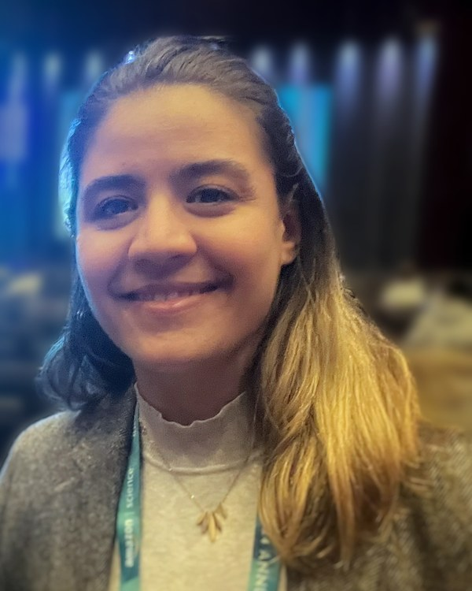

Operations Management · Decision Sciences
Postdoctoral Fellow, Rotman School of Management, University of Toronto
Ph.D. in Operations Management, Bayes Business School, City, University of London
On the 2026–27 academic job market
I build decision models for service systems under uncertainty — combining stochastic optimization, queueing, and game theory with real operational data to improve access to healthcare and public services.
About
I am a Postdoctoral Fellow at the Rotman School of Management, University of Toronto, working with Olga Bountali on access to recurrent services, motivated by dialysis care for uninsured patients. Before Rotman, I was a Postdoctoral Associate at Western University, where I studied funding policies for autism services with Felipe Rodrigues, Greg Zaric, and Salar Ghamat. I completed my Ph.D. in Operations Management at Bayes Business School, City, University of London, where my dissertation developed optimization models for healthcare workforce planning; both dissertation papers appear in the European Journal of Operational Research. My earlier training is in industrial engineering, with an M.Sc. from the University of Alberta.
Research
Stochastic optimization · Markov decision processes · hospital data
How should a hospital balance inexpensive permanent staff, hired with long lead times, against costly agency staff available on short notice? My dissertation developed a two-stage stochastic program with an embedded queueing model for mid-term recruitment (EJOR 2023) and a Markov decision process for long-term planning under demand information asymmetry (EJOR 2027). Both were calibrated to large-scale inpatient data and informed the partner hospital’s nurse recruitment decisions.
Queueing games · contract design · policy evaluation
Families seeking publicly funded autism services face multi-year waits and a strategic choice: wait for public funding or pay privately in the meantime. My queueing-game analysis of the Ontario Autism Program — my job market paper — shows that calibrated rebate mechanisms can cut expected waiting times and move the decentralized system toward the social optimum (invited to resubmit at POM). At Rotman, I am extending this line to recurrent service access and strategic re-entry — when patients who leave a system should return, and how providers should manage reassessment.
Game theory · pricing · regulation
I model pricing competition and market access between brand and generic manufacturers after patent expiration, asking how regulatory and pricing policy shape market dynamics and welfare.
Looking ahead, I aim to integrate machine learning with stochastic optimization and game-theoretic modeling to build adaptive decision models for settings where demand and behavior evolve over time.
Publications
Research talk
A short introduction to my Ph.D. research on optimal recruitment of temporary and permanent healthcare workers, recorded for the graduate Workforce Analytics course at Imperial College Business School (February 2020).
Teaching
I have taught analytics, quantitative methods, and operations courses at the undergraduate and graduate levels across five institutions, including Imperial College Business School, London Business School, and Bayes Business School. At Imperial, I designed and delivered the Support Vector Machines session of the graduate Workforce Analytics course; my materials were incorporated into the permanent curriculum. At Bayes, I served as a substitute lecturer in Quantitative Methods and Analytics on several occasions between 2018 and 2022, with full responsibility for delivering class sessions. I am an Associate Fellow of the Higher Education Academy (AFHEA), a formal certification in evidence-based teaching.
As a graduate teaching assistant, I supported Data Analytics for Management and Data Analytics for Business (London Business School), Workforce Analytics (Imperial College), Supply Chain Management Analytics and Business Forecasting and Data Analytics (University of London), and Operations Management (Bayes), alongside undergraduate courses at Bayes and the University of Alberta.
Operations management · supply chain analytics · business statistics · forecasting · simulation · optimization · machine learning for business · quantitative methods for decision-making
Activity
Contact
saha.malaki@utoronto.ca
Copied
Seattle, WA, USA · Google Scholar · LinkedIn · Full CV (PDF)
Reference contact details are listed in my CV.